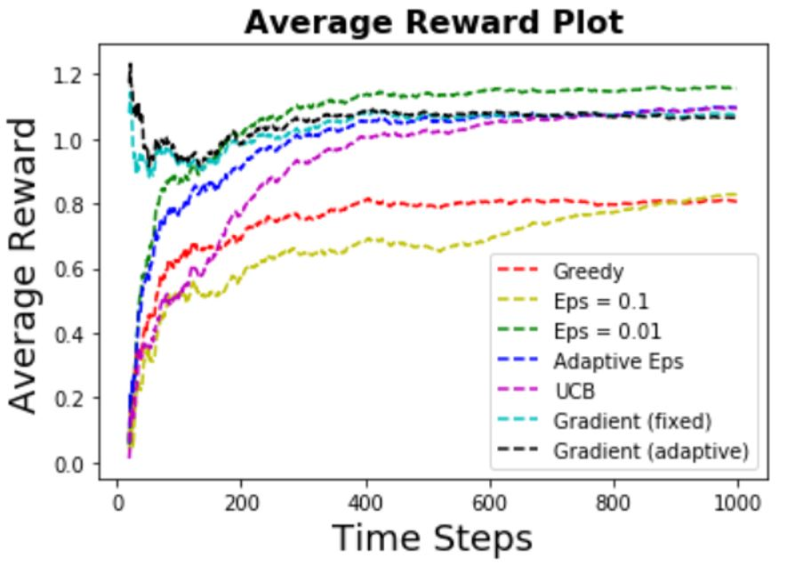
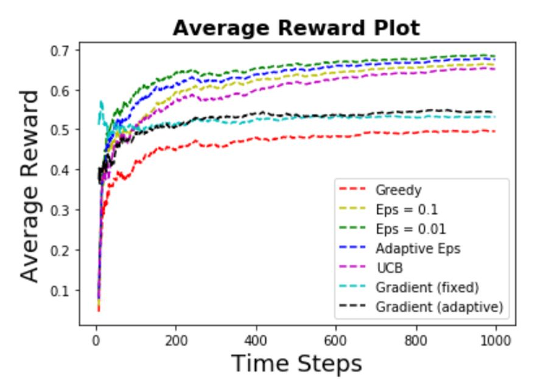
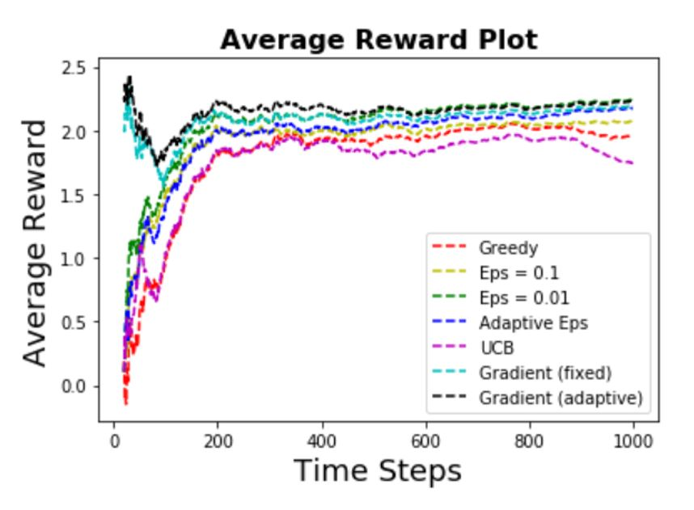
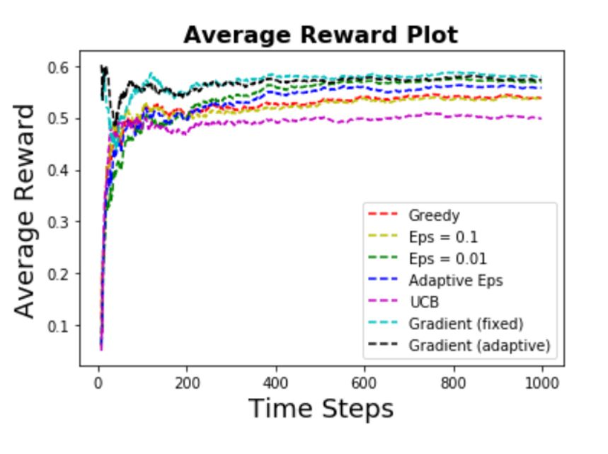

Different algorithms for the multi-armed bandit problem
The multi-armed bandit problem is a classic problem in reinforcement learning, where there is only
a single state (for stationary bandits). It has a variety of applications including
used as an alternative for A/B testing in digital marketing (for resource allocations). The goal of this
project is to understand some of the best known algorithms for the bandit problem
under different settings (e.g. stationary vs non-stationary, continuous reward vs discrete reward).
Algorithms in this project are written from FIRST PRINCIPLE using Python. For each scenario, the following
algorithms are being used:
- Greedy action selection
- Eps-Greedy action selection (different eps)
- Upper-Confidence-Bound action selection
- Gradient bandits (different learning rates)
For each scenario, 100 independent bandits are generated where each bandit has the same underlying
probability distribution of action values. For each bandit, 1000 time steps are performed. To assess
the performance of each algorithm under each setting, by averaging the results over the bandits, the average
reward is plotted to see how performance is improving with experience.
Scenario 1. Stationary Bandits - Noisy Continuous Reward
In this scenario, each bandit involves 10 different actions (10 arms), and the true action values are sampled
according to some probability distribution (where this probability distribution is stationary - does not
change over time). In addition, the reward for a bandit is the true action value
plus some noisy term (which is sampled from another probability distribution). The average reward plot
is shown as follows:

Some of the observations are:
- Ranking of performance:
Eps-Greedy (small eps) > UCB = Gradients > Eps-Greedy (big eps) > Greedy
- Greedy algorithm has a much worse performance compared to other algorithms. This makes sense
as the reward has big variance (due to noise), and EXPLORATION beats EXPLOITATION in this case.
- Hyper-parameters is important for the algorithms. In this case,
for the eps-greedy algorithm, using big eps causes a much worse performance (and slow convergence rate)
compared to using a small eps.
Scenario 2. Stationary Bernoulli Bandits
In this scenario, the agent chooses among 4 different actions (4 arms). When arm k is pulled, the reward
will be either 1 (success) or 0 (failure) with some probability pk, i.e. the reward for each arm follows
a Bernoulli distribution with parameter pk. Here, all bandits are stationary - the
success probability for each arm p1,p2,p3,p4 remains the same over time. The average reward plot
is shown as follows:

Some of the observations are:
- The success probability for each arm is 0.5,0.7,0.3,0.4. It can be seen that the top performers
are learning well toward the best arm.
- Ranking of performance:
Eps-Greedy (small eps) > Eps-Greedy (adaptive eps) > Eps-Greedy (big eps) > UCB >
Gradients > Greedy
- Again the greedy algorithm has a much worse performance compared to other algorithms.
EXPLORATION beats EXPLOITATION in this case.
- In this case, the gradient algorithms do not perform well compared to other exploration algorithms,
possibly due to the fact that the algorithm got stuck in some suboptimal action (in this case,
the first arm which has success probability of 0.5). Using better
learning rates might be useful in this case.
Scenario 3. Non-Stationary Bandits - Noisy Continuous Reward
Compared to scenario 1, now the bandits are non-stationary
- where the probability distribution that the true action values are sampled from changes over time.
Note that in this case, a CONSTANT STEP SIZE
is being used to get an exponentially decayed average for the estimated action values.
Again, the reward for a bandit is the true action value
plus some noisy term (which is sampled from another probability distribution). The average reward plot
is shown as follows:

Some of the observations are:
- Ranking of performance:
Gradients > Eps-Greedy > Greedy > UCB
- Once again the greedy algorithm does not perform well. This makes sense
as the reward is now having even bigger variance (due to noise and non-stationary true action values),
and EXPLORATION beats EXPLOITATION in this case.
- Note that the UCB algorithm does not perform well in this case. This is true as the UCB in general
is not generalizable to deal with non-stationary problems.
Scenario 4. Non-Stationary Bernoulli Bandits
Compared to scenario 2, now the success probability for each arm is no longer constant (or stationary) by
the following way. At each time t, the agent has an equal probability of choosing 1 of 3 regimes of the
slot machine, and each regime has a different constant probability distribution for success events. This
will make it more difficult to learn the true action values.
The average reward plot
is shown as follows:

Some of the observations are:
- The success probability for each arm is (0.5,0.7,0.3,0.4) for regime 1, (0.7,0.3,0.4,0.5) for regime 2,
and (0.5,0.3,0.4,0.7) for regime 3. Again the best arm has a success probability of 0.7.
- Ranking of performance:
Gradients = Eps-greedy (small & adaptive) > Greedy = Eps-greedy (big eps) > UCB
- First note that in general, all the algorithms have a worse performance compared to the
stationary scenario - this makes sense as the non-stationary scenario is more complex to learn.
- Once again the greedy algorithm and eps-greedy algorithm with big eps
have worse performance compared to other algorithms (except UCB).
- Again the UCB algorithm does not perform well in this case. This is true as the UCB in general
is not generalizable to deal with non-stationary problems.
Last updated on Nov 9, 2019